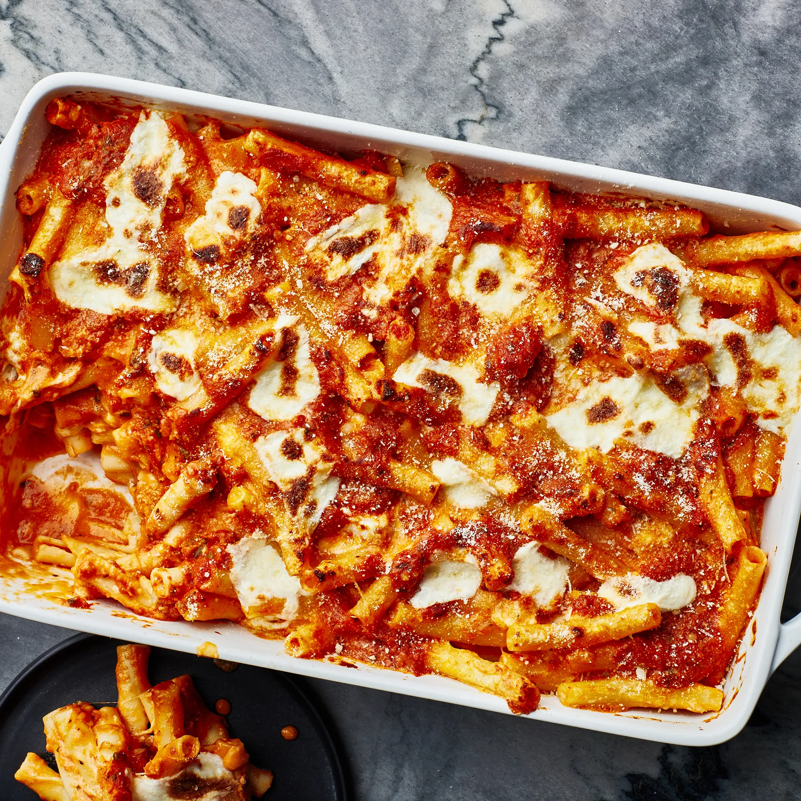

A vegeterian version of a dish, made famous by The Sopranos. Serves four.
Ingredients
- 300g De Cecco Penne
- 400g Good Quality Tinned Tomatoes
- 100ml Red Wine
- 1 Onion
- 50g Tomato Puree
- 1 Carrot
- 1 Chili
- 2 Garlic Cloves
- 200g Vegeterian Mince Meat
- Olive Oil
- 300g Cottage Cheese
- 50g Grated Parmesan Cheese
Steps
- Set oven to 175°C.
- With a pan on a medium heat add olive oil and cook garlic, chili and onion until fragrant.
- Add carrot and vegeterian mince to pan, meanwhile cook the pasta in a separate pan until 'al dente'.
- Once the vegetables and mince are softend, season to taste and add tinnned tomatoes, red wine, tomoato puree and reduce to a simmer.
- After the sauce has been cooking for 10 minutes, combined half the sauce and half the pasta in a caserole dish.
- Top the pasta with cottage cheese and spread all over with back of a spoon.
- Repeat previous two steps, adding the second layer of pasta and cottage cheese.
- Sprinkle over grated parmesan cheese.
- Bake in oven for 15-20 minutes or until cheese is golden brown and nicely melted.
Back to top
Home